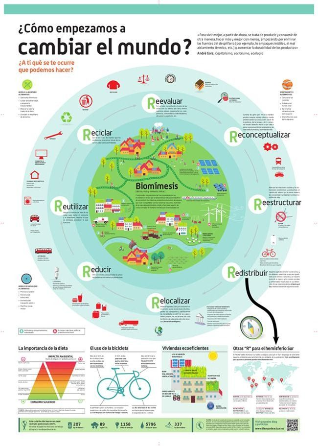

xddd
Reestructurar
xd
La Clave Para La Reesctructuracion.
Reestructurar
Toda nuestra gestión ambiental en una fase adolescente y medianamente madura no tiene más de 20 años. Paso de ser un tema de discusión a tener un rol protagónico en nuestros proyectos, políticas y conflictos. El sistema en si fue estructurándose y tomado fuerza poco a poco, con un consiguiente desorden, burocratización, falta de autoridad y politización de la gestión ambiental.
xddddddd
Tuvimos la oportunidad de hacer un sistema claro, ameno, amigable con el usuario pero terminamos con una estructura gigante, con sinfín de permisos, engorroso y no falto de corrupción. Y como lo determinan los fundamentos del estado, el sistema tiene que funcionar para el pueblo, las inversiones y la sostenibilidad de nuestras próximas generaciones; por eso tiene que cambiar.
A continuación los principales factores para la estructuración de las políticas públicas ambientales:
1. Considerar la evaluaciones ambientales como una ciencia exacta
2. La abolición de los Estándares de Calidad Ambiental
3. El especialista ambiental es un especialista del medio físico
4. Desligar los sistemas integrados de gestión de la gestión ambiental
5. No se debe reglamentar aquello que no se comprende
6. El regulador ambiental como funcionario del Estado
7. La carrera de ingeniería ambiental debe tener 50% de manejo de software

xddddddd